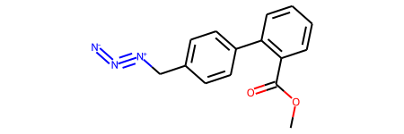
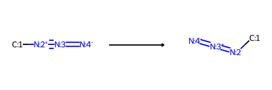
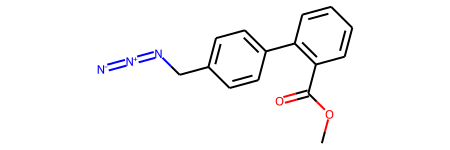
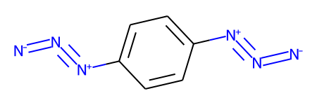
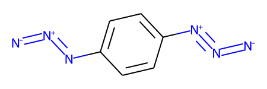
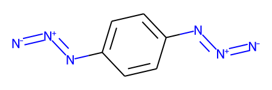

from rdkit import Chem
from rdkit.Chem import rdChemReactions
from rdkit.Chem.Draw import IPythonConsole
from rdkit.Chem import Draw
import rdkit
print(rdkit.__version__)2021.09.3This short post was inspired by a recent question on the RDKit-discuss mailing list: https://www.mail-archive.com/rdkit-discuss@lists.sourceforge.net/msg10905.html
The idea is to provide a quick introduction to a piece of chemical reaction functionality which was added to the 2021.09 RDKit release.
from rdkit import Chem
from rdkit.Chem import rdChemReactions
from rdkit.Chem.Draw import IPythonConsole
from rdkit.Chem import Draw
import rdkit
print(rdkit.__version__)2021.09.3This was the molecule that Lewis asked about.
m1 = Chem.MolFromSmiles('COC(=O)C1=C(C=CC=C1)C1=CC=C(C[N+]#[N]=[N-])C=C1',sanitize=False)
m1
The RDKit won’t accept this with default settings because there’s an odd representation of an azide group which includes a five-valent neutral nitrogen.
It’s straight forward to define a reaction which can convert this odd azide form to the more normal variant:
tf1 = rdChemReactions.ReactionFromSmarts('[#6:1]-[N+:2]#[N:3]=[N-:4]>>[#6:1]-[N+0:2]=[N+1:3]=[N-:4]')
tf1
The usual way to use this would be with the RunReactants() method, which returns a list of lists of new molecules. In this case though, we have a reaction which operates on a single reactant and has a single product, so we can take advantage of the new RunReactantInPlace() method.
As the method name implies, this modifies the reactant molecule in place instead of creating new molecules which are returned as products:
tf1.RunReactantInPlace(m1)
# now sanitize the molecule so that we do chemistry perception and can get decent drawings:
Chem.SanitizeMol(m1)
m1
It’s important to note that his only modifies one match at a time, so if we have multiple functional groups which need to be modified, we’ll need to call RunReactantInPlace() multiple times.
Here’s a demonstration of that using a molecule which has two of these weird azide constructions
m1 = Chem.MolFromSmiles('c1cc([N+]#[N]=[N-])ccc1[N+]#[N]=[N-]',sanitize=False)
m1
The first application of RunReactantInPlace() changes one of the groups:
tf1.RunReactantInPlace(m1)
m1
If we call RunReactantInPlace() again, the second occurance is replaced:
tf1.RunReactantInPlace(m1)
m1
RunReactantInPlace() makes it easy to know when to stop because it returns a boolean letting you know whether or not the molecule was modified. So in this case we’ll get false:
tf1.RunReactantInPlace(m1)FalseThis makes it easy to do all the transformations to a molecule with a while loop:
m1 = Chem.MolFromSmiles('c1cc([N+]#[N]=[N-])ccc1[N+]#[N]=[N-]',sanitize=False)
while tf1.RunReactantInPlace(m1):
pass
Chem.SanitizeMol(m1)
m1
RunReactantInPlace() is limited, it can only be used with reactions which only have one reactant and product and which do not add atoms in the product.
tf2 = rdChemReactions.ReactionFromSmarts('[#6:1]-[NH2:2]>>[#6:1]-[NH2:2]C')
tmp = Chem.MolFromSmiles('CCN')
tf2.RunReactantInPlace(tmp)ValueError: ChemicalParserException: single component reactions which add atoms in the product are not supportedNote that it can be used with reactions which remove atoms:
tf2 = rdChemReactions.ReactionFromSmarts('[#6:1]-[NH2:2]>>[#6:1]')
tmp = Chem.MolFromSmiles('CCN')
tf2.RunReactantInPlace(tmp)TruetmpAside from being easier to use when working with this simple transformations, it’s worth pointing out that RunReactantInPlace() is significantly faster than using RunReactants() with the same reaction:
m1 = Chem.MolFromSmiles('COC(=O)C1=C(C=CC=C1)C1=CC=C(C[N+]#[N]=[N-])C=C1',sanitize=False)
%timeit tf1.RunReactantInPlace(Chem.Mol(m1))9.93 µs ± 125 ns per loop (mean ± std. dev. of 7 runs, 100000 loops each)m1 = Chem.MolFromSmiles('COC(=O)C1=C(C=CC=C1)C1=CC=C(C[N+]#[N]=[N-])C=C1',sanitize=False)
%timeit tf1.RunReactants((Chem.Mol(m1),))22.6 µs ± 81.2 ns per loop (mean ± std. dev. of 7 runs, 10000 loops each)